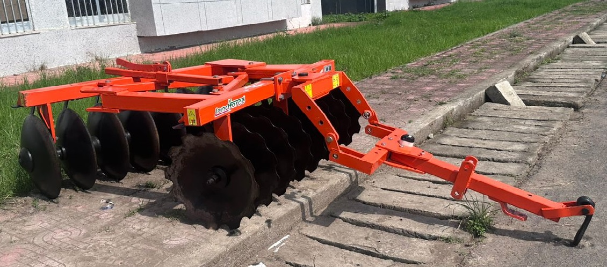
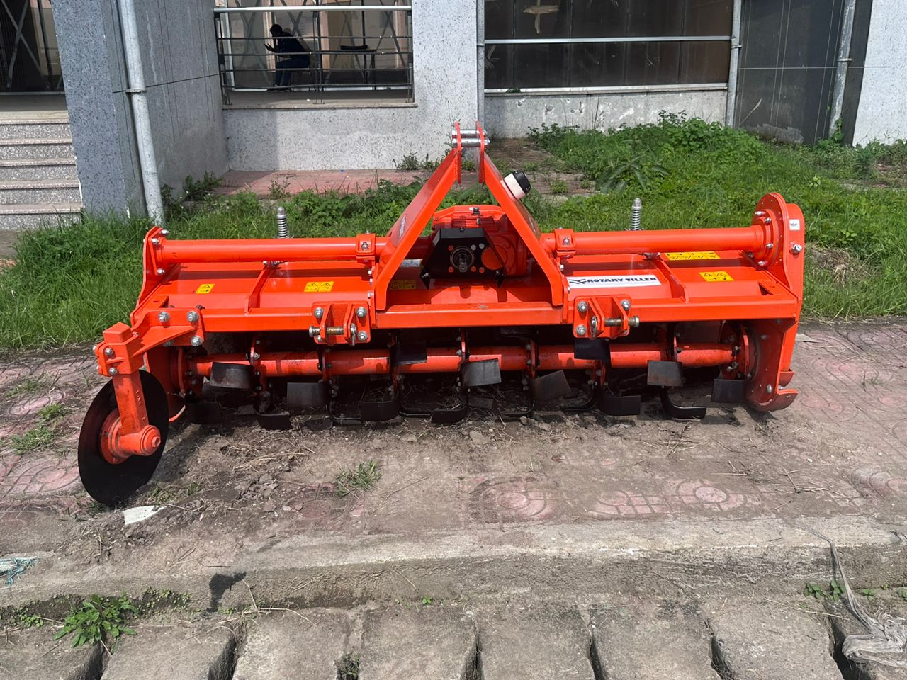
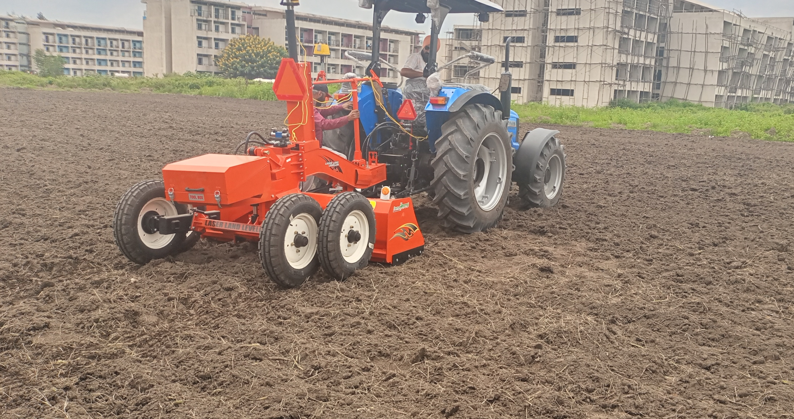
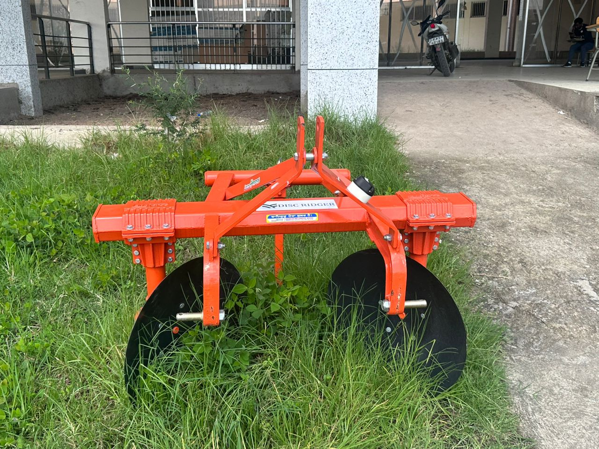
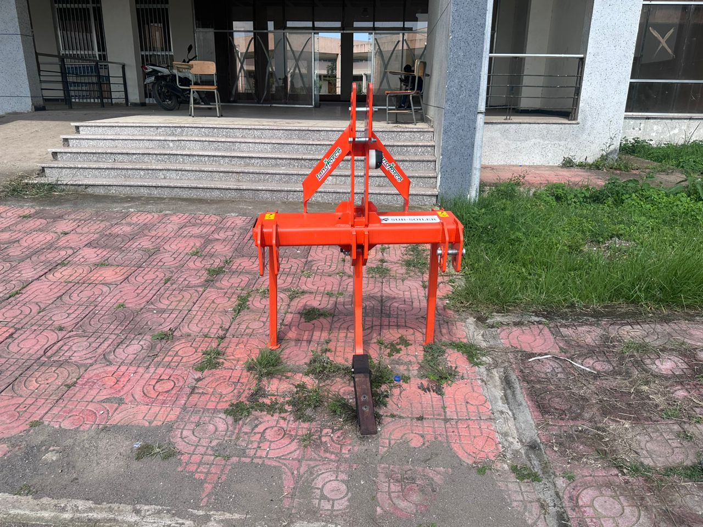
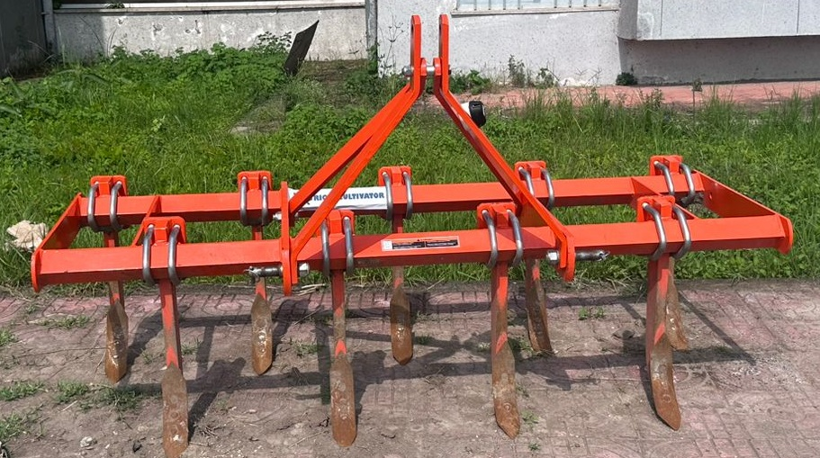
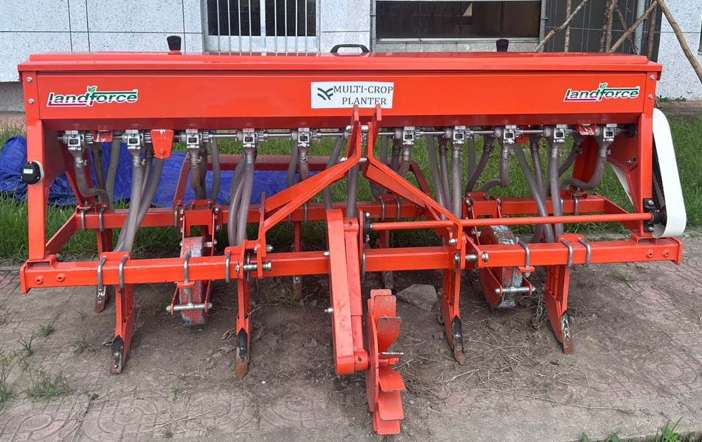
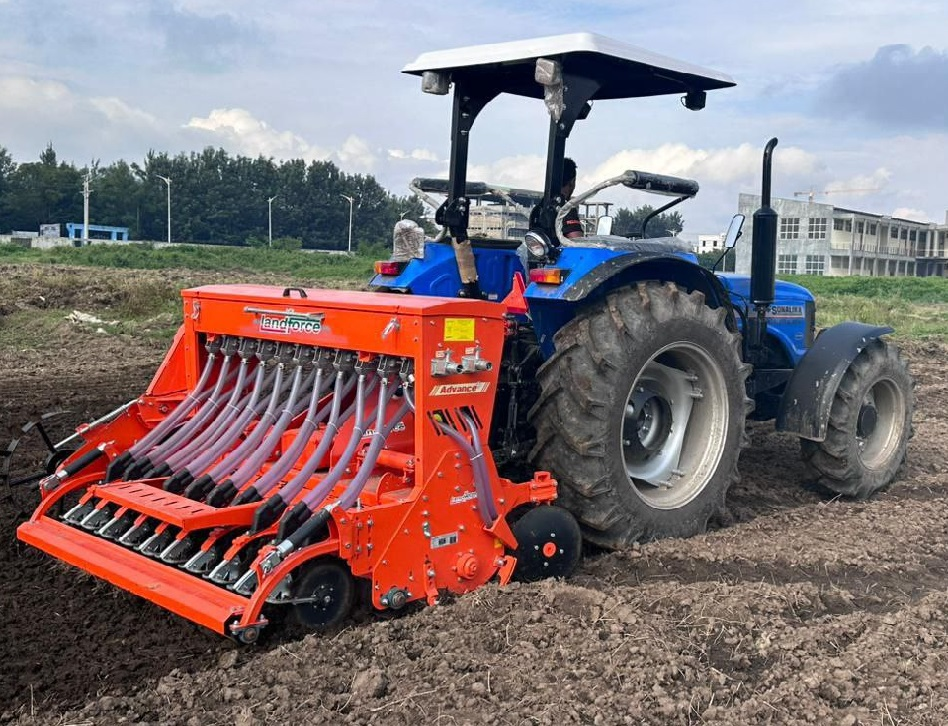
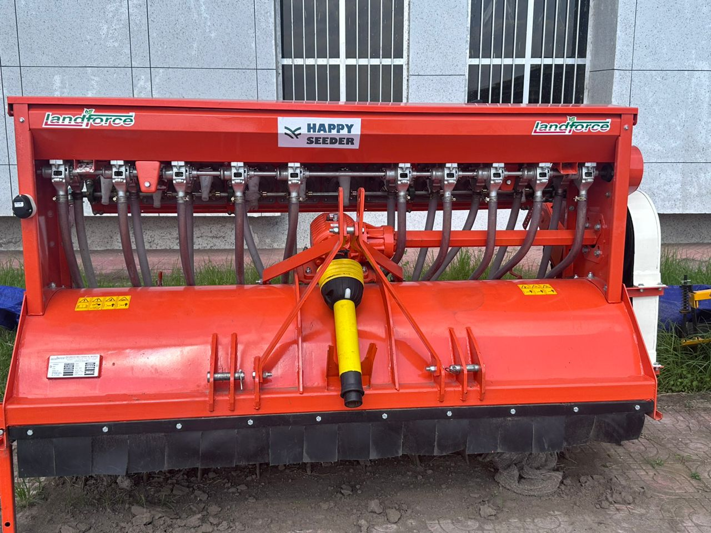
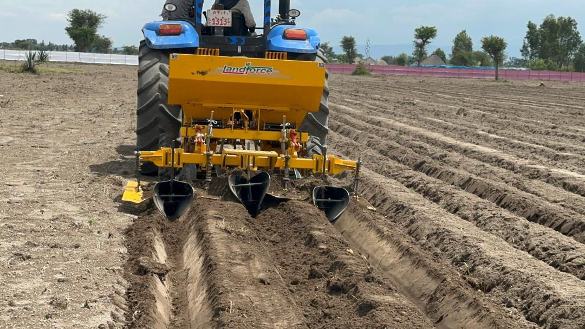

Modern, affordable mechanization solutions to increase productivity and reduce labor intensity

Secondary tillage to break up soil clods and create a fine seedbed for optimal planting conditions.
More DetailsThe Disk Harrow is a robust secondary tillage implement designed to refine soil structure after primary plowing. It breaks clods, incorporates crop residues, and eliminates weeds, creating a fine, uniform seedbed ideal for sowing. It is compatible with 50HP tractors, it combines power and efficiency to meet the needs of Ethiopian smallholder farmers.
Best for: Fields with compacted soil, first-time cultivation, or after long fallow periods

Secondary tillage to break up soil clods and create a fine seedbed for optimal planting conditions.
More DetailsThe Rotary Tiller is a versatile tillage implement designed to prepare soil for planting by thoroughly mixing, aerating, and refining soil structure. It breaks hardpan, pulverizes clods, incorporates crop residues, and eliminates weeds, creating a uniform, fine-textured seedbed ideal for sowing. It is designed to be pulled by 50HP tractors, it combines power, precision, and efficiency to meet the needs of Ethiopian smallholder farmers. The unique design is ideal for seed bed preparation to improve the soil health and supplements in retaining soil moisture and increases porosity.
Best for: Fields after primary tillage, preparing for all crops

Precision leveling of fields to ensure uniform water distribution and improve irrigation efficiency.
More DetailsOur Laser Land Leveler revolutionizes field preparation by delivering unparalleled precision in land leveling, ensuring optimal water distribution and uniform crop growth. It levels the field within a certain degree of the desired slope using a guided laser beam throughout the field. An unevenness of the soil surface has a significant impact on the germination, stand, and yield of crops.
Best for: Irrigated fields, rice paddies, fields with uneven topography

Creating raised beds for crops that benefit from improved drainage and soil warming.
More DetailsBest for: Root crops, vegetables, areas with heavy rainfall

Deep soil loosening without inversion to break up hardpans and improve root penetration.
More DetailsBest for: Fields with known compaction issues, heavy clay soils

Deep soil loosening without inversion to break up hardpans and improve root penetration.
More DetailsBest for: Fields with known compaction issues, heavy clay soils

Precision planting of crops in straight rows with optimal spacing for maximum yield.
More DetailsBest for: Most field crops (maize, wheat, soybeans, etc.)

No-till planting that preserves soil structure while ensuring proper seed placement.
More DetailsBest for: Conservation agriculture, areas with erosion risk

Advanced planting technology for exact seed placement and population control.
More DetailsBest for: High-value crops, seed production fields

The Potato Planter revolutionizes potato production by delivering precise, efficient planting of potatoes in uniform rows. It creates optimal seed beds with integrated furrow systems, this versatile machine adapts to diverse soils, climates, and farm sizes.
More Details
Precision application of fertilizers and crop protection products using boom sprayers.
More DetailsBest for: Large-scale herbicide, pesticide, or foliar fertilizer applications
Specialized expertise in agricultural machinery, post-harvest technology, precision agriculture, and farm business economics

Expert guidance on selecting the right machinery for your farm size, crops, and budget constraints.
More DetailsDeliverables: Equipment recommendation report with specifications and budget
Best for: Farmers expanding operations, cooperatives purchasing equipment

Systems development for efficient machinery use, maintenance scheduling, and cost control.
More DetailsDeliverables: Complete machinery management manual + training materials
Best for: Medium to large farms, equipment service providers

Hands-on training programs for tractor operators and equipment maintenance technicians.
More DetailsDuration: 5-11 days | Format: 70% practical, 30% theory
Certification: Certificate of Completion provided

Consultation on designing and managing efficient storage facilities to minimize post-harvest losses.
More DetailsDeliverables: Storage facility design plans + management protocols
Best for: Grain producers, cooperatives, agro-processors

Guidance on selecting and implementing appropriate processing technologies for value addition.
More DetailsDeliverables: Processing technology roadmap + business case analysis
Best for: Farmers adding value, startup agro-processors

Comprehensive training on reducing losses and maintaining quality from harvest to market.
More DetailsDuration: 3-5 days | Focus: Practical techniques for Ethiopian conditions
Best for: All farmers, warehouse managers, extension workers

Developing tailored precision agriculture systems suitable for Ethiopian farming conditions.
More DetailsDeliverables: Precision agriculture implementation plan + technology roadmap
Best for: Commercial farms, research stations, progressive farmers

Implementing cost-effective monitoring systems for optimized input application.
More DetailsDeliverables: Soil fertility maps + precision input application plans
Best for: Farms with input optimization needs, irrigation projects

Practical training on precision farming technologies and data-driven decision making.
More DetailsDuration: 5-7 days | Level: Intermediate to advanced
Prerequisites: Basic computer skills, farming experience

Comprehensive business planning for agricultural enterprises and farmer cooperatives.
More DetailsDeliverables: Complete business plan document + financial model
Best for: New agricultural ventures, expanding farms, cooperatives

Detailed economic analysis of farm operations for improved profitability and efficiency.
More DetailsDeliverables: Economic analysis report + recommendations for improvement
Best for: Commercial farms, investors, agricultural projects

Practical training on farm record keeping, budgeting, and financial decision making.
More DetailsDuration: 3-5 days | Focus: Practical tools for Ethiopian farmers
Best for: Farm managers, cooperative leaders, aspiring agripreneurs
Comprehensive consultancy combining all four areas for complete farm transformation.
More DetailsDuration: 2-3 month engagement
Best for: New farm developments, major expansion projects
Get in touch with us to book any of our services or to learn more about how we can help your farm
Contact Us Now